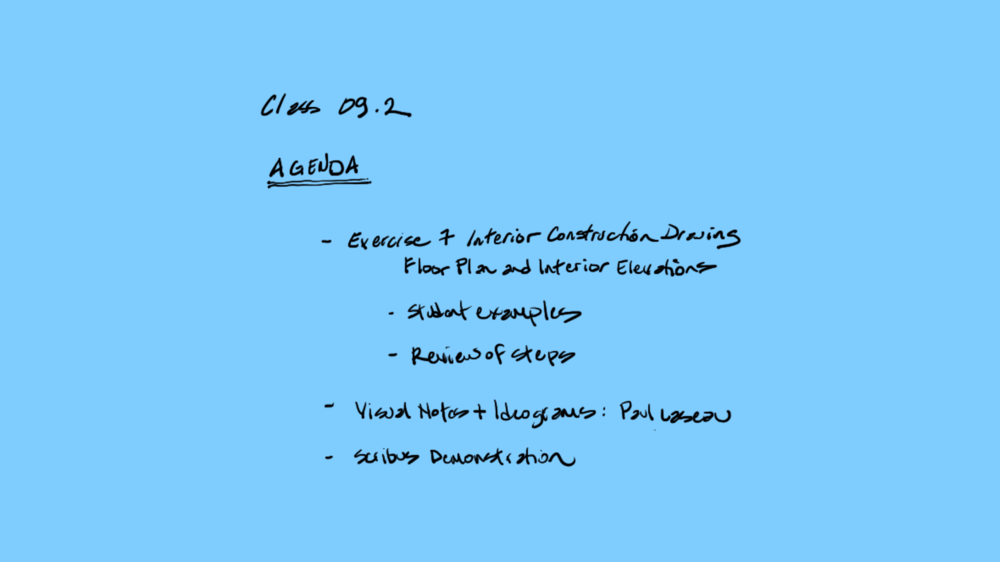
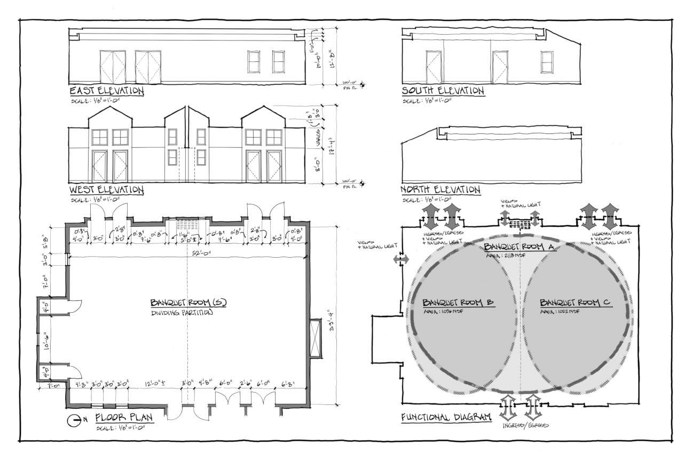
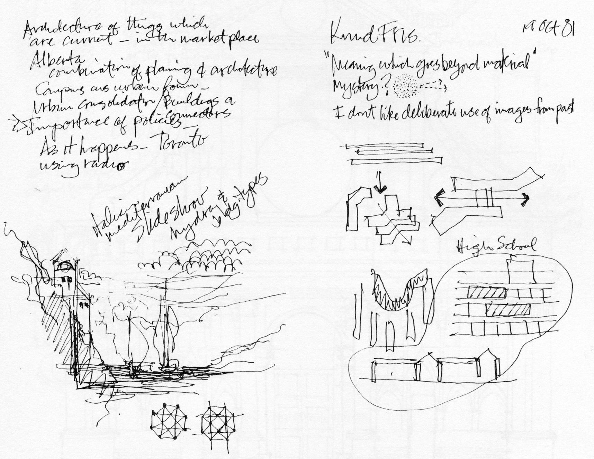
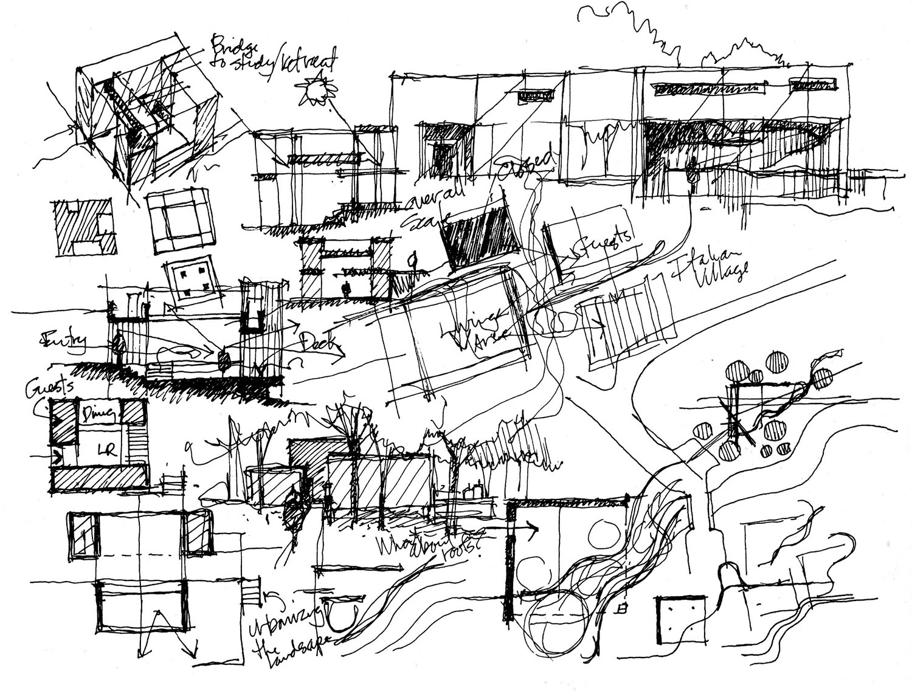
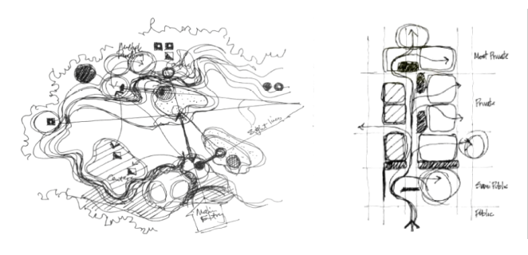

Today’s Agenda: Agenda 09-2
Frequently Asked Questions: FAQ

Exercise Seven. Interior Construction
Drawing. Floor Plan and Interior Elevations.

Pages from Visual Notes

Visual Notes 2

Visual Notes 3
Exercise 7 Examples